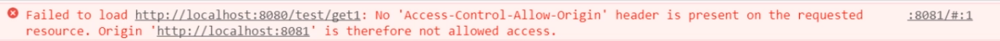
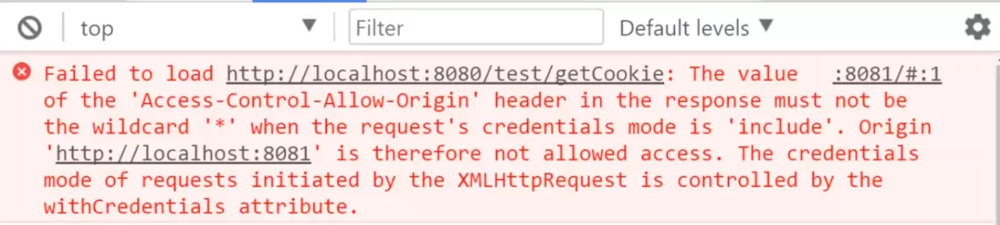

跨域以及一些解决方法
跨域
最近在回顾一些知识，归纳一下以前的笔记再结合各个资料说一下我对跨域和跨域问题的解决方法。
产生跨域安全问题不是后台服务器不允许前台调用，
其本质是浏览器的同源策略(Same-origin policy)造成的，它是浏览器最基本和最核心的安全机制，同源是指URI scheme、host name、port number相同，借用一下网上的栗子：
|
|
如果非同源，将会受到如下限制：
- Cookie、LocalStorage 和 IndexDB 无法读取。
- DOM 无法获得。
- AJAX 请求不能发送。
浏览器发现前台代码发出了一个非本域的请求，出于安全的考虑，浏览器会做一些校验，如果校验不通过，就无法完成这个请求，抛出请求跨域的错误

Jsonp
JSONP是JSON with padding（填充式JSON或参数式JSON）的简写，是应用JSON的一种办法，JSONP看起来和JSON差不多，只不过是被包含在函数调用中的JSON，就像这样:
|
|
JSONP由两部分组成：回调函数和数据。回调函数是当浏览器接收到响应时调用的函数，回电函数名一般在请求中指定，数据就是回调函数的参数。如下就是典型的JSONP请求：
|
|
这里指定的回调函数就是handleResponse()
JSONP实现原理是通过JS脚本动态生成一个script元素，为其src属性指定一个跨域URL，这里的script元素和img、link元素类似，都有能力不受限制地从其他域加载资源。它并不是官方的协议，而是一种hack手段，看一个简单的栗子：
|
|
JSONP实现跨域访问非常方便，简单易用，但是也有不足的地方：
首先，从它的实现方式可以看出来，它是发起一个资源获取请求，是GET类型的，在日常开发中常用的请求类型还有POST，PUT，DELETE，而JSONP只能发起GET请求，是它的一大短板。
其次，JSONP是从其他域中加载代码并执行，如果其他域不安全，很有可能会在执行的代码中夹杂一些恶意代码，所以在使用JSONP时一定要保证被请求方它安全可靠。
另外，JSON和JSONP还有一个区别需要特别注意，JSONP请求返回来的不是JSON数据，而是一个JavaScript脚本，为了实现JSONP跨域，需要后台服务器配合。
最后，由于它的请求类型并不是XHR，就缺少了一些事件处理程序，要追踪JSONP请求是否失败并不容易，或者为JSONP请求增加定时器，超时就视为请求失败，接下来就再次发送请求或者做其他事情，但是每个用户的网络状况并不能保证，这样做也不是万全之策。
CORS
CORS(Cross-origin resource sharing)跨域源资源共享，是W3C的一个工作草案， 定义了在跨域访问时，浏览器与服务器的沟通方式，具体实现为，使用自定义的HTTP头部让浏览器与服务器进行沟通，从而决定跨域请求或响应时应该成功，还是应该失败。
比如说发起一个GET跨域请求，Content-type是text/plain,在发送跨域请求前，浏览器会为http头部加上一个额外的Origin头部，其中包含了页面的源信息(协议、域名和端口号)，这个额外的Origin决定了服务器是否响应该请求。一个Origin头部实例：
|
|
如果服务器认可该请求就会在响应头加上Access-Control-Allow-Origin标志字段,值可以是与请求头带来的Origin相同，如果该服务器上的是公共资源，值就是“*”。
|
|
如果响应头中没有这个这个字段，说明服务器拒绝了这次跨域请求，会抛出一个错误，但是并不能被xhr的onerror事件捕获。默认情况下跨域请求都是不带凭证的（cookie，HTTP认证及服务端SSL证明等），通过修改xhr对象的withCredentials(IE10以前的版本不支持该属性)设置为true，可以指定某个请求携带凭证。如果服务器允许跨域请求携带凭证响应头部会有标示。Access-Control-Allow-Credentials: true
如果发送的是带凭证的请求，响应头里却没有这个字段，那么浏览器就不会吧响应交给JS，意思是xhr获取到的responseText为空，status为0，这个时候onerror可以捕获到该错误.
XHR对象在跨域时也是有限制的:
不能使用setRequestHeader()来设置头部
默认情况下无法发送cookie
调用getAllResponseHeaders()方法总会返回空字符串
CORS的实现:
|
|
发送CORS请求和发送普通的xhr对象差别不大, 只需要在地址处写绝对地址即可.跨域所需要做的工作就交给浏览器,对于用户来说是透明.
IE浏览器是用XDR(XDomainRequest)来实现CORS的,它和XHR相似,但是能提供能安全可靠的跨域通信:
cookie不会随请求发送,也不会随响应返回
只能设置请求头部信息中的Content-Type字段
不能访问响应头部信息
只支持GET和POST请求
XDR对象和xhr的使用方法类型,也是创造一个XDomainRequest的实例,调用open()方法,再调用send()方法,但是与xhr对象的open()不同,XDR对象的open()方法只接受两个参数:请求的类型和URL,XDR发送的请求都是异步执行的。而且XDR对象无法访问status属性，所以在使用XDR时一定得通过onerror事件处理程序来捕获错误.
简单请求
跨域请求在发送前,浏览器会检查这个请求是不是简单请求,简单请求满足下面两个条件:
- 请求方式为
HEAD,POST,GET HTTP头部信息包括但不超过以下字段- Accept-Language
- Content-Language
- Last-Event-ID
- Content-Type(application/x-www-form-urlencode,multipart/form-data,text/plain)
如果满足这些条件，浏览器就会在请求头部增加额外的Origin字段后发送跨域请求。
响应头一般包含这些字段：
- Access-Control-Allow-Origin，如果浏览器校验通过，这个字段显示的是请求头的Origin值或者*
- Access-Control-Allow-Credential，值为布尔型，表示请求头是否可以携带cookie
- Access-Control-Expose-Headers。拓展的头部信息，浏览器将CORS响应交给JS后，XMLHttpRequest对象的getResponseHeader()方法只能拿到6个基本字段：Cache-Control、Content-Language、Content-Type、Expires、Last-Modified、Pragma。如果想拿到其他字段，就必须在Access-Control-Expose-Headers里面指定。
注意，如果你想在请求中携带凭证，上面已经说过了，必须将xhr的withCrediential属性设置为true，但有时会报错，错误信息如下图：

错误提示里说如果想要在请求头中携带凭证，那么响应头中的Access-Control-Allow-Origin必须和请求头中的Origin一致，而不能是“*”，解决方法很简单，修改一下后端代码就可以了。
非简单请求
CORS通过一种叫做Preflighted Requestes预请求的透明服务器验证机制支持开发人员使用自定义的头部，GET和POST之外的方法，以及不同类型的主题内容。也就是说想要发送这种非简单的跨域请求以前会先发送一个询问请求（携带非简单请求部分信息）来询问服务器是否同意这次非简单请求，这种询问请求使用OPTIONS方法，发送以下头部：
- Origin：和简单请求相同
- Access-Control-Request-Method：请求自身使用的方法
- Access-Control-Request-Headers：这是一个可选头部字段，多个头部以逗号分开。
发送这个请求以后，服务器可以决定是否允许这种类型的请求。服务器可以通过在响应头中携带以下头部与浏览器沟通：
- Access-Control-Allow-Origin：和简单请求相同
- Access-Control-Allow-Methods：允许的方法
- Access-Control-Allow-Headers: 允许的头部
- Access-Control-Max-Age: 预请求的有效期或者缓存存活时间(秒)
比如说我现在发送了一个自定义头部字段f-headers1和f-headers2,方法为post的非简单请求,那么首先发送的预请求头部会包含以下信息:
|
|
如果服务器允许这样的非简单请求的跨域访问,返回的响应头会包含这些字段:
|
|
预请求结束后,结果将按照响应中指定的时间缓存起来,下次再发送这样的非简单请求之前就不会再发送询问请求.
Cookie
上述几条都是解决跨域请求资源，但是如果想要获取非同源的cookie，LocalStorage或IndexDB怎么办。cookie是服务器在浏览器上写下的一小段认证信息，大小一般是4k，根据浏览器的不同，每个域允许种下的cookie数量也不同。cookie只有在同源的域下才能共享，但是我们可以通过修改document.domain来共享cookie，如下所示
|
|
但是这种方法前提是这两个网页一级域名相同，一级域名或者叫根域名相同是什么意思呢，比如说这里有个两个域名www.abc.com和www.f.abc.com它们的一级域名都是abc.com。二级域名就是增加了一级包括www，比如说www.zdt.com,netgo.ccdn.com,www.baidu.com等等.三级,四级域名同理.
而且这种方法只适用于cookie和iframe.无法获取locastorage和IndexDB.
iframe
利用iframe解决跨域问题也是一种可取的办法.光是给iframe增加src获取其他页面的资源是不现实,必须借助一些特性实现hack手段.
document.domain
两个iframe之间或者父窗口和子窗口之间。如上述例子里通过改变相同主域的document.domain可以跨域获取cookie，也可以获取对方的全局变量。这种方法和跨域获取cookie一样，只适合具有相同主域的跨域访问。实现原理为相同主域的网站设置相同的document.domain,浏览器就任务它们是同源的,这种方式比较简单，但也有安全问题，如果某一个网站被攻击后，另一个网站就会有安全漏洞
window.name
window.name,它具有更新了页面的location更新后，值依然不会更变的神奇特性,这让我们跨域访问信息提供了机会。在一个页面中创建一个不同域的iframe，这个iframe的js代码修改它window.name的值，然后再将它变为和父窗口同域的iframe，在父窗口中就可以通过iframe获得修改过后的window.name的值
location.hash
location.hash又称片段标识符(Fragment Identitier),它是URL字符中#后面的部分,比如http://www.somewhere-else.com/a.html#fragment,这里的片段标识符就是fragment,URL中的片段标识符改变并不会引起页面刷新.利用location.hash实现跨域访问信息的原理是父窗口可以读写子窗口的URL,子窗口只能读写相同域父窗口的URL.这里想要实现跨域,不同域的子窗口就必须借助一个与父窗口同域的代理. 举个栗子a.abc.com/index.html(a)下有一个src为smg.com/index.html(b)的iframe.
a页面给b页面发送数据
- a修改b的src为smg.com/index.html#data
- b页面访问自己的location.hash即可拿到数据
b页面给a页面发送数据,b由于不能修改不同域父窗口的URL,所以b页面需要动态创建一个和父窗口同域的iframe来做代理.
- b页面创建一个src为a.abc.com/proxy.html#data的子窗口
- 这个proxy页面通过onhashchange(兼容情况)事件监听自己href的变化,事件触发后通过修改a页面的hash来达到传递数据的功能
- a页面访问自己的location.hash即可拿到数据
postMessage
不管是iframe和location.hash、document.domain还是window.name都是属于非官方的跨越方法，下面要介绍的就是一个官方方法—postMessage,它是HTML5新增的一个跨文档通信API，它实现了即使不同域也可以跨窗口直接通信的功能，而且只要使用得当，这种方法就很安全。
调用对象为父窗口或者的window对象、window.open()的返回值或者是iframe的contentWindow这个属性，这个方法接受两个参数，第一个是要发送的消息，第二个参数是指定接受消息的接收源，可以是*表示所有窗口都可以接收到消息或者是一个url，但只有在协议，域名和端口号都相同才会接收到消息。
添加以下代码即可接收
|
|
事件event对象有三个属性
- data,发送过来的信息
- origin,发送发窗口的origin
- source,对发送消息的窗口对象的引用; 您可以使用此来在具有不同origin的两个窗口之间建立双向通信